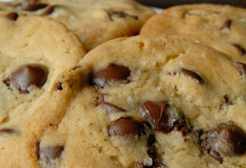

The Best Chocolate Chip Cookies
Recipe by: My Grandma
Prep Time: 45 Min

Ingredients:
- 1/2 cup (3 sticks) softened butter
- 1 cup brown sugar
- 1 cup granulated sugar
- 1 Tbl vanilla instant pudding powder
- Tbl milk
- 2 eggs
- 4 cups all purpose flour
- 2 tsp baking soda
- 1/2 tsp salt
- 4 cups chocolate chips
- 1 cup chopped walnuts or pecans(optional)
How to make Mama’s Recipe:
- Beat butter and sugars together until light and fluffy
- Stir in pudding mix milk and vanilla extract
- Beat in eggs
- Add dry ingredients and stir until combined
- Stir in chocolate chips and nuts
- Place 1 1/2 inch balls of dough 2 inches apart on an un greased cookie sheet
- Bake 8-10 minutes or until golden brown
Nutrition Information
Probably bad for you, but who cares. MMMMMM COOKIES!!!! nom nom nom
Visit the source recipe